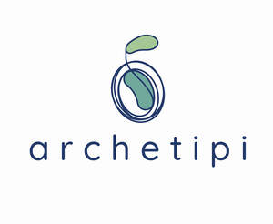

Trade Mark Journal No.2025/024 13 June 2025
UK00004210791 29 May 2025 (16,28,41,44)

International priority date claimed: 3 December 2024
(European Union Intellectual Property Office (EUIPO))
(019114612)
- Class 16
- Cards; Printed matter; Books; Printed publications; Paper teaching materials; Printed teaching materials; Educational publications; Cards for use as teaching materials.
- Class 28
- Playing cards; Playing cards; Tarot cards [playing cards]; Cards for use in games; Playing cards; Projective cards.
- Class 41
- Entertainment, education and instruction services; Recreation and training services; Entertainment services; Arranging of games; Training or education services in the field of life coaching; Career counselling and coaching; Publication of printed matter; Publication of educational teaching materials; Development of educational materials; Dissemination of educational material.
- Class 44
- Psychological assessment services; Psychological testing services; Preparing psychological profiles; Psychological diagnosis services; Provision of information relating to psychology; Personality testing for psychological purposes; Psychological testing for medical purposes; Preparation of psychological profiles for medical purposes; Conducting of psychological assessments and examination; Art therapy; Personality tests for psychotherapy use; Psychotherapy services; Psychometric testing for medical purposes; Personality testing [mental health services].
GIOVANNI UMBERTO DE BEDIN
Representative: CARLO VIVA